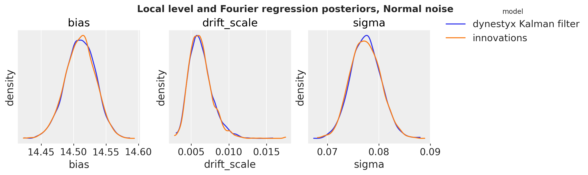
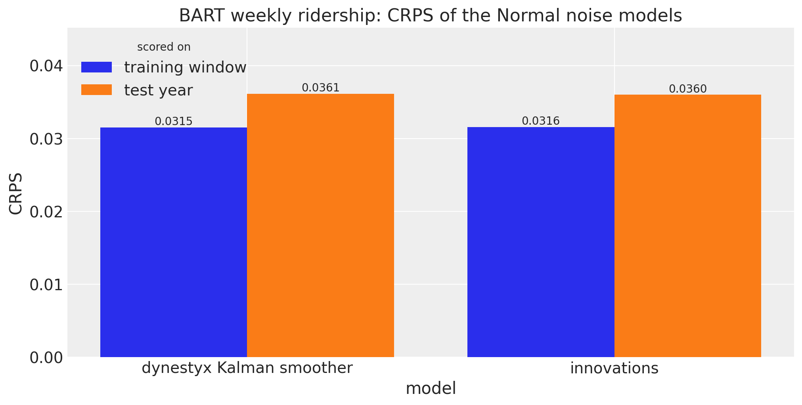
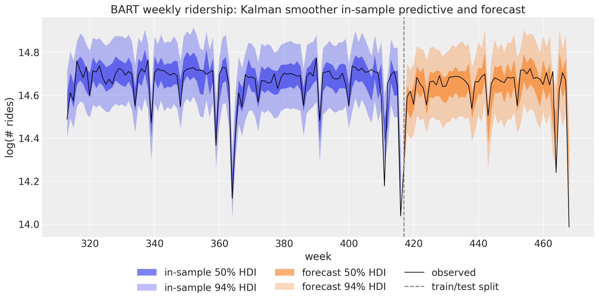
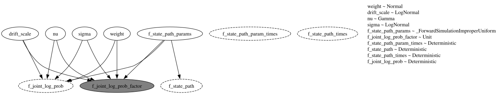
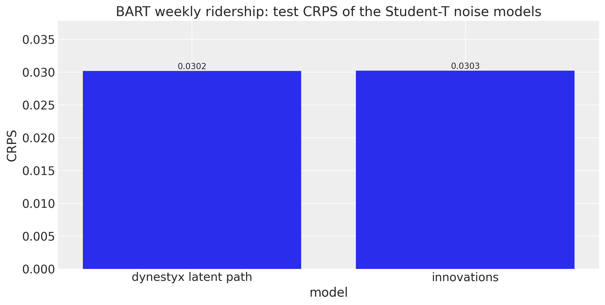
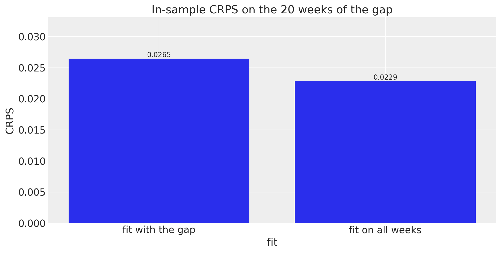
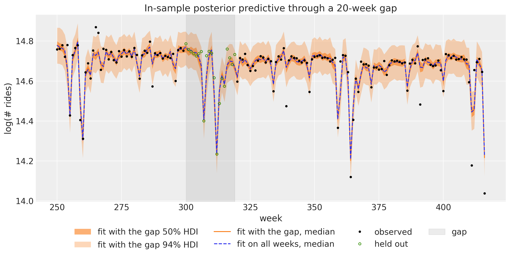
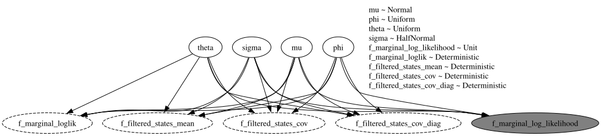

Write dynestyx state space models with the state_space building block, integrate a local level out with a Kalman filter, export the in-sample predictive with to_datatree, sample the level explicitly for Student-T noise, fit through a gap of missing observations, and write ARMA(1,1) as a state space model.
Getting Started with dynestyx State Space Models
This example fits the BART weekly ridership model of the comparing inference methods example and the ARMA model of the ARMA example as dynestyx state space models. It is the entry point to dynestyx in numpyro_forecast. The advanced example continues with filtering versus smoothing, the cost of a gradient, variational inference and backtesting.
dynestyx is a library designed for Bayesian modeling and inference of dynamical systems. It is an extension of NumPyro, and incorporates a wide variety of state-of-the-art inference methods for state space models.
This notebook uses these components of dynestyx:
DynamicalModel: holds the initial condition, the state evolution and the observation model of a state space model.
dynestyx.sample: adds a DynamicalModel to a NumPyro model. The effect handlers around the call decide what it does with the model.
Filter and Smoother: handlers that integrate the latent path out and add the marginal log likelihood to the NumPyro trace.
LatentPathBuilder: a handler that samples the latent path.
Simulator: a handler that rolls the state forward in time.
How state_space works. The three modes of the block and where the dynestyx handler goes.
Local level with a Kalman filter. The BART model with Normal noise: the Kalman filter integrates the level out, and we compare the fit with the innovations model of the package.
In-sample predictive and forecast. We export the Kalman fit with to_datatree under a Kalman smoother, without a refit.
Student-T noise with an explicit path. No Kalman filter is exact here, so dynestyx samples the level.
Missing data. We fit the explicit-path model through a gap of 20 weeks.
A two-dimensional state. We write ARMA(1,1) as a state space model.
Prepare Notebook
import numpyronumpyro.set_host_device_count(n=4) # before any import that initializes jaximport warningsfrom time import perf_counterfrom typing import Literalimport arviz as azimport dynestyx as dsximport jaximport jax.numpy as jnpimport matplotlib.pyplot as pltimport numpy as npimport numpyro.distributions as distimport polars as plimport xarray as xrfrom dynestyx import DiscreteTimeSimulator, DynamicalModel, Filter, LatentPathBuilder, Smootherfrom dynestyx.inference.configs.smoother import KFSmootherConfigfrom dynestyx.inference.filters import KFConfigfrom dynestyx.models import LinearGaussianObservation, LinearGaussianStateEvolutionfrom jax import randomfrom jaxtyping import Floatfrom numpyro.infer import MCMC, NUTSfrom numpyro.infer.reparam import LocScaleReparamfrom numpyro_forecast import ( Horizon, eval_crps, forecast, innovations, predict, predict_in_sample, predictions_to_datatree, ssoe, to_datatree,)from numpyro_forecast.contrib.dynestyx import state_spacefrom numpyro_forecast.datasets import load_bart_weeklyfrom numpyro_forecast.features import fourier_featuresfrom numpyro_forecast.typing import Array, ForecastModel# arviz-plots warns whenever `aes` maps `alpha`, even to `["prob"]` as the band plots below dowarnings.filterwarnings("ignore", message="When multiple credible intervals are plotted", category=UserWarning)az.style.use("arviz-darkgrid")plt.rcParams["figure.figsize"] = [10, 6]plt.rcParams["figure.dpi"] =100plt.rcParams["figure.facecolor"] ="white"rng_key = random.PRNGKey(seed=42)print(f"dynestyx {dsx.__version__}, numpyro {numpyro.__version__}, jax {jax.__version__}")%load_ext autoreload%autoreload 2%load_ext jaxtyping%jaxtyping.typechecker beartype.beartype%config InlineBackend.figure_format ="retina"
state_space(h, name, y, dynamics, controls=...) goes inside a model function (covariates, data=None), like the other building blocks of the package. It turns the Horizonh into the time grids of dynestyx.sample, calls it once, and registers the sites the drivers read. h decides the mode of the call:
Training (data given, no horizon): the handler adds its likelihood to the trace, which is what NUTS or SVI fits.
Forecasting (covariates longer than data): a Simulator rolls the conditioned state at the last observation forward, and the block registers the draws as the "forecast" site.
In-sample predictive (data=None): the block draws the in-sample states, from the smoothing distribution under a Smoother or the sampled path under a LatentPathBuilder. It draws one observation per step from the observation model and registers them as the "obs" site. This is not a prior predictive, because the block still conditions on the observed window.
The block reads the observed window y from the covariates, as ssoe does, because the drivers call the model without data for the in-sample predictive.
The dynestyx handler goes around each call that runs the model, as in the dynestyx examples, so the same model function serves every inference strategy:
with Filter(filter_config=KFConfig()): mcmc.run(key_fit, covariates_train, data_train)# the parameters only, without the filtered states that the filter fit recordedposterior = {k: v for k, v in mcmc.get_samples().items() ifnot k.startswith("f_")}with DiscreteTimeSimulator(n_simulations=1), Smoother(smoother_config=KFSmootherConfig()): tree = to_datatree(key_export, model, posterior, data_train, covariates)
The block raises an error when no Filter, Smoother or LatentPathBuilder is around the call. Without one, dynestyx would pick an inference method itself and only log the choice.
Local Level with a Kalman Filter
The comparing inference methods example fits a random walk level plus a Fourier regression to the weekly BART ridership. In this section the noise is Normal:
where y_t is the log ridership of week t, u_t holds the 52 Fourier terms of the yearly cycle, and s is the drift_scale. The priors are those of the comparing inference methods example. We hold out the last 52 weeks.
The covariate array carries the series in column 0 and the Fourier terms in columns 1:. The dynestyx model reads its observed window from column 0, and the numpyro_forecast model ignores it.
covariates (469, 53), train (417, 1), test (52, 1)
The model is linear and Gaussian, so the Kalman filter integrates the level out exactly, and NUTS explores the 55 parameters only. In dynestyx terms, the regression is the control matrix D of the observation model and the intercept is its bias. The Fourier terms enter as controls over the whole horizon, so the forecast reads their future rows from the covariates.
def gaussian_ssm(covariates: Array, data: Array |None=None) ->None:"""Random walk level plus Fourier regression with Normal noise, as a dynestyx model.""" h = Horizon.from_data(covariates, data) y = covariates[..., : h.t_obs, :1] # the observed window, (t_obs, 1) controls = covariates[..., 1:] # the Fourier terms over the whole horizon, (duration, 52) bias = numpyro.sample("bias", dist.Normal(0.0, 10.0)) weight = numpyro.sample("weight", dist.Normal(0.0, 0.1).expand([controls.shape[-1]]).to_event(1) ) drift_scale = numpyro.sample("drift_scale", dist.LogNormal(-20.0, 5.0)) sigma = numpyro.sample("sigma", dist.LogNormal(-5.0, 5.0)) dynamics = DynamicalModel( initial_condition=dist.MultivariateNormal(jnp.zeros(1), drift_scale**2* jnp.eye(1)), state_evolution=LinearGaussianStateEvolution( A=jnp.eye(1), cov=drift_scale**2* jnp.eye(1) ), observation_model=LinearGaussianObservation( H=jnp.eye(1), R=sigma**2* jnp.eye(1), D=weight[None, :], bias=bias[None] ), control_dim=controls.shape[-1], ) state_space(h, "f", y, dynamics, controls=controls)
Next, let’s render the model with numpyro.render_model. The render traces the model, so the block needs a dynestyx handler around the call. We use the Kalman filter of the fit below, on the cd_dynamax backend. We pass KFConfig explicitly: without a configuration, Filter() uses an ensemble Kalman filter, which is approximate.
The graph has no time plate: the Kalman filter integrates the level out, so NUTS samples the four parameter sites only. The gray node f_marginal_log_likelihood is the factor that the filter adds to the trace. The dashed nodes are deterministic sites that dynestyx records, such as the filtered state means f_filtered_states_mean.
As a reference we fit the same model with the building blocks of the package: innovations samples the 417 weekly steps of the level, and predict adds the likelihood. The comparing inference methods example also samples a centered site for its LocScaleReparam. That site only selects a parameterization, so its posterior equals its prior and NUTS mixes poorly on it. Here we fix the non-centered form instead.
def gaussian_model(covariates: Array, data: Array |None=None) ->None:"""Random walk level plus Fourier regression with Normal noise, with ``innovations``.""" h = Horizon.from_data(covariates, data) fourier = covariates[..., 1:] # column 0 is the series, read only by the dynestyx model bias = numpyro.sample("bias", dist.Normal(0.0, 10.0)) weight = numpyro.sample("weight", dist.Normal(0.0, 0.1).expand([fourier.shape[-1]]).to_event(1) ) drift_scale = numpyro.sample("drift_scale", dist.LogNormal(-20.0, 5.0)) sigma = numpyro.sample("sigma", dist.LogNormal(-5.0, 5.0)) drift = innovations( h, "drift", dist.Normal(0.0, drift_scale), reparam=LocScaleReparam(centered=0) ) level = jnp.cumsum(drift, axis=-2) regression = (weight * fourier).sum(axis=-1, keepdims=True) predict(h, dist.Normal(0.0, sigma), level + bias + regression)
This model has no dynestyx site, so we render it without a handler:
Here the level is explicit. The time plate holds the non-centered weekly steps drift_decentered and the steps drift, which enter the likelihood of the observed obs site.
We fit both models with NUTS: 4 chains, a target acceptance probability of 0.9 and parallel chains. The fits under a LatentPathBuilder below are the exception: they run their chains one after the other. Every fit in this notebook goes through fit_nuts, which also returns the wall time of the run, warmup and compilation included.
For every fit we check the convergence over every sample site, the vectors and the latent path included. diagnostics reports the number of scalar parameters NUTS explores, the smallest bulk effective sample size (ESS), the largest \hat{R}, the number of divergent transitions, the leapfrog steps per draw and the wall time. fits_table collects the diagnostics of several fits into one table. posterior_tree collects the draws of a list of sites into an ArviZ tree, which is where the diagnostics and the posterior plots below start.
def fit_nuts( rng_key: Array, model: ForecastModel, covariates: Array, data: Array,*, num_warmup: int, chain_method: Literal["parallel", "sequential", "vectorized"], num_samples: int=1_000,) ->tuple[MCMC, float]:"""Fit ``model`` with NUTS (4 chains) and return the sampler and the wall time in seconds.""" mcmc = MCMC( NUTS(model, target_accept_prob=0.9), num_warmup=num_warmup, num_samples=num_samples, num_chains=4, chain_method=chain_method, progress_bar=False, ) start = perf_counter() mcmc.run(rng_key, covariates, data, extra_fields=("num_steps", "diverging")) jax.block_until_ready(mcmc.get_samples())return mcmc, perf_counter() - startdef posterior_tree(mcmc: MCMC, names: list[str]) -> xr.DataTree:"""Return the ``(chain, draw)`` posterior of the sites ``names`` as a DataTree.""" grouped = mcmc.get_samples(group_by_chain=True)return az.from_dict({"posterior": {name: np.asarray(grouped[name]) for name in names}})def diagnostics(mcmc: MCMC, seconds: float) ->dict[str, int|float]:"""Convergence over every sample site of the fit, and its sampler cost.""" sites =sorted(mcmc.last_state.z) # the sample sites NUTS explores, deterministic ones out tree = posterior_tree(mcmc, sites)# one value per scalar parameter; min and max propagate a NaN ess = np.concatenate( [v.to_numpy().ravel() for v in az.ess(tree, method="bulk").dataset.data_vars.values()] ) r_hat = np.concatenate( [v.to_numpy().ravel() for v in az.rhat(tree).dataset.data_vars.values()] ) extra = mcmc.get_extra_fields()return {"parameters": ess.size,"min bulk ESS": round(float(ess.min())), # a NaN raises"max R-hat": round(float(r_hat.max()), 3),"divergences": int(np.asarray(extra["diverging"]).sum()),"leapfrog steps per draw": round(float(np.asarray(extra["num_steps"]).mean()), 1),"wall time (s)": round(seconds, 1), }def fits_table(fits: dict[str, dict[str, int|float]]) -> pl.DataFrame:"""One row of ``diagnostics`` per fit."""return pl.DataFrame([{"fit": label} | row for label, row in fits.items()])
The dynestyx fit runs under the Kalman filter kalman of the graph above.
The largest \hat{R} is 1.008 and the smallest bulk ESS is 1{,}684. There are no divergent transitions.
NUTS explores 55 parameters with the Kalman filter and 472 with innovations, the 417 weekly steps of the level included.
The filter takes 11.5 leapfrog steps per draw, against 127.0 for innovations. Each of those steps runs the filter as a sequential scan over the 417 weeks. That costs much more than the cumulative sum of innovations, so on the CPU that executed this notebook the Kalman fit took longer in wall time.
We overlay the posteriors of the three scalar parameters that both models share, one parameter per panel.
def plot_posteriors( fits: dict[str, MCMC], names: list[str], title: str, truth: dict[str, float] |None=None) ->None:"""Overlay the posterior densities of ``names`` for every fit, one panel per parameter.""" trees = {label: posterior_tree(mcmc, names) for label, mcmc in fits.items()}with warnings.catch_warnings():# fits with different numbers of draws: arviz-plots pads the shorter one with NaN# (which the KDE drops), and xarray warns about the padding join warnings.filterwarnings("ignore", message="In a future version of xarray") pc = az.plot_dist( trees, var_names=names, kind="kde", visuals={"credible_interval": False,"point_estimate": False,"point_estimate_text": False, }, figure_kwargs={"figsize": (12, 3.5)}, ) pc.add_legend("model")for name in names: ax = pc.get_target(name, {}) ax.set(xlabel=name, ylabel="density")if truth isnotNone: ax.axvline(truth[name], color="black", ls="--", lw=1) pc.viz["figure"].item().suptitle(title, fontsize=14, fontweight="bold")plot_posteriors( {"dynestyx Kalman filter": mcmc_kalman, "innovations": mcmc_innovations}, ["bias", "drift_scale", "sigma"], title="Local level and Fourier regression posteriors, Normal noise",)

The posteriors of the intercept, of the scale of the weekly steps and of the noise scale coincide.
In-Sample Predictive and Forecast
to_datatree draws the in-sample predictive by calling the model without data, and the forecast by calling it with the full-horizon covariates. For the in-sample predictive the block needs the distribution of the states given the whole window, p(x_t \mid y_{1:T}, \theta). A Filter does not have it: it carries the filtering distribution p(x_t \mid y_{1:t}, \theta) only. A Kalman smoother has the smoothing distribution, and it adds the same marginal likelihood to the trace as the Kalman filter. The draws of the filter fit are therefore draws of the posterior under the smoother too, so we export them under the smoother, with the Simulator outside it for the forecast, and do not refit.
The block draws every in-sample state from its smoothing distribution and pushes it through the observation model. These draws are exact for every week, so the bands and the CRPS below are correct. They are independent across weeks, while innovations replays a joint posterior path.
smoother = Smoother(smoother_config=KFSmootherConfig(filter_source="cd_dynamax"))# the parameters only: the filter fit also recorded its filtered states (f_filtered_states_*),# which the export under the smoother does not needkalman_parameters = { name: value for name, value in mcmc_kalman.get_samples().items() ifnot name.startswith("f_")}rng_key, key_tree_kalman, key_tree = random.split(rng_key, 3)with DiscreteTimeSimulator(n_simulations=1), smoother: trees = {"dynestyx Kalman smoother": to_datatree( key_tree_kalman, gaussian_ssm, kalman_parameters, bart_train, bart_covariates, num_chains=4, batch_size=500, ) }trees["innovations"] = to_datatree( key_tree, gaussian_model, mcmc_innovations.get_samples(), bart_train, bart_covariates, num_chains=4, batch_size=500,)trees["dynestyx Kalman smoother"]
Both trees carry the posterior_predictive group (the in-sample draws) and the predictions group (the forecast). To score them we merge the (chain, draw) dimensions into one sample axis. plot_crps then draws the CRPS of each model as a bar, with its value on top.
def stacked(tree: xr.DataTree, group: str) -> np.ndarray:"""Draws of ``tree[group]["obs"]`` with ``(chain, draw)`` merged into ``(sample, time, 1)``."""return ( tree[group] .dataset["obs"] .stack(sample=("chain", "draw")) .transpose("sample", "time", "obs_dim") .to_numpy() )def plot_crps(scores: dict[str, dict[str, float]], title: str, xlabel: str="model") ->None:"""Bars of the CRPS, ``scores[window][model]``: one group per model, one color per window.""" models =list(next(iter(scores.values()))) x = np.arange(len(models)) width =0.8/len(scores) _, ax = plt.subplots(figsize=(10, 5))for i, (window, by_model) inenumerate(scores.items()): offset = (i - (len(scores) -1) /2) * width bars = ax.bar( x + offset, [by_model[m] for m in models], width=width, color=f"C{i}", label=window ) ax.bar_label(bars, fmt="%.4f") ax.set_xticks(x, models) ax.margins(y=0.25)iflen(scores) >1: ax.legend(title="scored on", loc="upper left") ax.set(title=title, xlabel=xlabel, ylabel="CRPS")gaussian_crps = {"training window": { label: float(eval_crps(stacked(tree, "posterior_predictive"), bart_train))for label, tree in trees.items() },"test year": { label: float(eval_crps(stacked(tree, "predictions"), bart_test))for label, tree in trees.items() },}plot_crps(gaussian_crps, title="BART weekly ridership: CRPS of the Normal noise models");

The two models give the same in-sample CRPS (0.0315 and 0.0316) and the same test CRPS (0.0361 and 0.0360). Next we look at the in-sample predictive and the forecast of the dynestyx model over the last two years of the training window and the test year.
def hdi_label(prob: float, prefix: str="") ->str:r"""Legend label for an HDI band, e.g. ``$94\%$ HDI``.""" percent =f"{prob:.0%}".replace("%", r"\%")returnf"{prefix}${percent}$ HDI"hdi_probs = (0.5, 0.94)hdi_alphas = [0.6, 0.3] # 50% band darker, 94% band lighterstart = t_obs -104# the last two years of the training windowtree = trees["dynestyx Kalman smoother"]pc = az.plot_lm( predictions_to_datatree( stacked(tree, "posterior_predictive")[:, start:], week[start:t_obs], ["bart"] ), y="obs", x="t", plot_dim="time", ci_kind="hdi", ci_prob=hdi_probs, smooth=False, aes={"alpha": ["prob"]}, alpha=hdi_alphas, visuals={"ci_band": {"color": "C0"}, "observed_scatter": False, "pe_line": False}, figure_kwargs={"figsize": (12, 6)},)in_sample_bands = {prob: pc.viz["ci_band"]["t"].sel(prob=prob).item() for prob in hdi_probs}az.plot_lm( predictions_to_datatree(stacked(tree, "predictions"), week[t_obs:], ["bart"]), y="obs", x="t", plot_dim="time", plot_collection=pc, ci_kind="hdi", ci_prob=hdi_probs, smooth=False, aes={"alpha": ["prob"]}, alpha=hdi_alphas, visuals={"ci_band": {"color": "C1"}, "observed_scatter": False, "pe_line": False},)forecast_bands = {prob: pc.viz["ci_band"]["t"].sel(prob=prob).item() for prob in hdi_probs}for prob in hdi_probs: in_sample_bands[prob].set_label(hdi_label(prob, prefix="in-sample ")) forecast_bands[prob].set_label(hdi_label(prob, prefix="forecast "))ax = pc.viz["figure"].item().axes[0](obs_line,) = ax.plot(week[start:], bart[start:, 0], color="black", lw=1, label="observed")split_line = ax.axvline(t_obs, color="gray", ls="--", label="train/test split")ax.legend( handles=[*in_sample_bands.values(), *forecast_bands.values(), obs_line, split_line], loc="upper center", bbox_to_anchor=(0.5, -0.1), ncol=3,)ax.set( title="BART weekly ridership: Kalman smoother in-sample predictive and forecast", xlabel="week", ylabel="log(# rides)",);

The in-sample band is the observation noise around the smoothed level. The forecast band is about as wide: the weekly steps of the level are small, so one year of them adds little to the observation noise. A few of the sharpest dips, such as the last week of the test year, fall outside the 94\% bands. The next section replaces the Normal noise with Student-T noise.
Student-T Noise with an Explicit Path
The comparing inference methods example uses Student-T noise, whose heavy tails allow for the sharp dips of the series:
Student-T noise rules out an exact Kalman filter. A particle filter does not combine well with NUTS here: with resampling, the likelihood estimate is not continuous in the parameters, and without it the weights collapse over 417 weeks. The dynestyx model therefore samples the level with a LatentPathBuilder, as innovations does. The observation model is a function of the state x_t, the controls u_t and the time t.
The builder samples the states x_t = b + \ell_t directly (the centered form) rather than their steps. With the intercept b as a separate parameter, a change of b must move all 417 states the other way. In this form the intercept is the initial state, so the dynestyx model has no bias site and gives the initial state the \text{Normal}(0, 10) prior of the intercept. The two models differ only in the variance s^2 that the first step adds to this prior, which is negligible.
def level_regression(covariates: Array, data: Array |None=None) ->None:"""Random walk level plus Fourier regression with Student-T noise, as a dynestyx model.""" h = Horizon.from_data(covariates, data) y = covariates[..., : h.t_obs, :1] controls = covariates[..., 1:] weight = numpyro.sample("weight", dist.Normal(0.0, 0.1).expand([controls.shape[-1]]).to_event(1) ) drift_scale = numpyro.sample("drift_scale", dist.LogNormal(-20.0, 5.0)) nu = numpyro.sample("nu", dist.Gamma(10.0, 2.0)) sigma = numpyro.sample("sigma", dist.LogNormal(-5.0, 5.0))def observation(x: Array, u: Array |None, t: Array) -> dist.Distribution: regression =0.0if u isNoneelse u @ weightreturn dist.StudentT(nu, x + regression, sigma).to_event(1) dynamics = DynamicalModel( initial_condition=dist.Normal(0.0, 10.0).expand([1]).to_event(1), # the intercept state_evolution=lambda x, u, t_now, t_next: dist.Normal(x, drift_scale).to_event(1), observation_model=observation, control_dim=controls.shape[-1], ) state_space(h, "f", y, dynamics, controls=controls)
We render the dynestyx model after its fit, because the LatentPathBuilder needs the concrete data of the fit (see below). As a reference, we write the same model with innovations and Student-T noise in predict:
Compared with the Normal model, the graph has one more parameter: the degrees of freedom nu of the Student-T noise.
Both fits run their chains one after the other (chain_method="sequential"). Parallel chains under a LatentPathBuilder crashed the Python process with dynestyx0.8.0 and Python 3.14 on the machine that executed this notebook (dynestyx declares support for Python 3.12 and 3.13). The explicit path runs 4{,}000 warmup steps and 4{,}000 draws per chain, against 2{,}000 and 1{,}000 for innovations, because it mixes more slowly. The per-parameter table below shows its slowest parameter.
We keep the LatentPathBuilder instance of the fit. The builder records the pattern of missing observations from the concrete data of the fit. The drivers later run the model under jax.jit, where the data are traced, so every later call must use the same instance.
With these chain lengths both fits converge over all their parameters:
The largest \hat{R} is 1.006 and the smallest bulk ESS is 439. There are no divergent transitions.
The two fits ran chains of different lengths, so their wall times do not compare their cost.
Per draw, the explicit path takes 135.2 leapfrog steps and innovations255.0, the length of a NUTS tree of depth 8.
Now we can render the dynestyx model. numpyro.render_model traces the model, as the drivers do, so it needs the builder of the fit, which has recorded the pattern of missing observations:
with latent_path: graph = numpyro.render_model( level_regression, model_args=(bart_covariates[:t_obs], bart_train), render_distributions=True, )graph

The builder adds the latent path as one sample site, f_state_path_params, which holds the 417 weekly states. The parameters and the path feed the gray factor f_joint_log_prob_factor: the joint log density of the path and the observations. The dashed nodes are deterministic sites that dynestyx records, such as the path f_state_path.
Next, we look at the diagnostics of the three scalar parameters that both models share:
student_names = ["drift_scale", "nu", "sigma"] # both models also share the 52 weightsstudent_summaries = { label: az.summary(posterior_tree(mcmc, student_names), fmt="xarray", round_to="none")for label, mcmc in (("dynestyx latent path", mcmc_latent), ("innovations", mcmc_univariate))}pl.DataFrame( [ {"fit": label, "parameter": name}| { stat: float(summary[name].sel(summary=stat))for stat in ("mean", "sd", "ess_bulk", "r_hat") }for label, summary in student_summaries.items()for name in student_names ]).with_columns( pl.col("mean", "sd").round(4), pl.col("ess_bulk").round(0).cast(pl.Int64), pl.col("r_hat").round(3),)
shape: (6, 6)
fit
parameter
mean
sd
ess_bulk
r_hat
str
str
f64
f64
i64
f64
"dynestyx latent path"
"drift_scale"
0.0044
0.0008
439
1.005
"dynestyx latent path"
"nu"
1.5749
0.2216
9972
1.0
"dynestyx latent path"
"sigma"
0.0172
0.002
6682
1.001
"innovations"
"drift_scale"
0.0045
0.0007
1335
1.004
"innovations"
"nu"
1.5674
0.2233
1228
1.001
"innovations"
"sigma"
0.0171
0.002
946
1.001
drift_scale is the slowest parameter of the explicit path: its bulk ESS is 439 from 16{,}000 draws, against 1{,}335 from 4{,}000 draws for innovations. The builder samples the states in centered form and has no reparameterization option, while innovations samples the non-centered steps.
The posteriors of the three shared parameters coincide.
Both models forecast through forecast. The LatentPathBuilder around the call is the instance that fitted the model.
rng_key, key_latent, key_univariate = random.split(rng_key, 3)with DiscreteTimeSimulator(n_simulations=1), latent_path: student_forecasts = {"dynestyx latent path": forecast( key_latent, level_regression, mcmc_latent.get_samples(), bart_train, bart_covariates, batch_size=500, ) }student_forecasts["innovations"] = forecast( key_univariate, univariate_model, mcmc_univariate.get_samples(), bart_train, bart_covariates, batch_size=500,)student_crps = { label: float(eval_crps(draws, bart_test)) for label, draws in student_forecasts.items()}plot_crps( {"test year": student_crps}, title="BART weekly ridership: test CRPS of the Student-T noise models",);

The test CRPS is 0.0302 for the explicit path and 0.0303 for innovations. Both score better than the Normal models of the previous section (test CRPS 0.0361 and 0.0360). We plot the two forecasts one above the other. The point estimate is the median of the draws: with \nu near 1.6 the Student-T noise has no finite variance, so a few extreme draws move the mean. The explicit path has four times as many draws as innovations, so we thin them to the same number for the figure.
num_draws =min(len(draws) for draws in student_forecasts.values())thinned = [np.asarray(draws)[:: len(draws) // num_draws] for draws in student_forecasts.values()]pc = az.plot_lm( predictions_to_datatree( np.concatenate(thinned, axis=-1), week[t_obs:],list(student_forecasts), ), y="obs", x="t", plot_dim="time", ci_kind="hdi", ci_prob=hdi_probs, smooth=False, point_estimate="median", col_wrap=1, aes={"color": ["series"], "alpha": ["prob"]}, alpha=hdi_alphas, aes_by_visuals={"pe_line": ["color"]}, visuals={"observed_scatter": False,"pe_line": {"alpha": 1.0, "width": 1.5},"xlabel": False,"ylabel": False, }, figure_kwargs={"figsize": (12, 10), "sharex": True, "sharey": True},)history =slice(t_obs -104, t_obs)for label in student_forecasts: ax = pc.get_target("t", {"series": label}) ax.plot(week[history], bart_train[history, 0], color="black", lw=1, label="train") ax.plot(week[t_obs:], bart_test[:, 0], color="black", lw=1, ls="--", label="test") ax.axvline(t_obs, color="gray", ls="--", lw=1) ax.set(title=f"{label} (test CRPS: {student_crps[label]:.4f})", ylabel="log(# rides)")for prob in hdi_probs: pc.viz["ci_band"]["t"].sel(series=label, prob=prob).item().set_label(hdi_label(prob)) pc.viz["pe_line"]["t"].sel(series=label).item().set_label("forecast median") ax.legend(loc="lower left", ncol=5)ax.set(xlabel="week")pc.viz["figure"].item().suptitle("BART weekly ridership: Student-T forecasts of the last 52 weeks", fontsize=14, fontweight="bold",);
The two panels show the same forecast: over the test year the medians and the HDI bands of the two models agree closely.
Missing Data
The LatentPathBuilder skips missing observations, so the Student-T model fits through a gap with no change to the model function. (The Kalman filter and smoother of the cuthbert backend skip them too, while the cd_dynamax backend rejects them.) We remove 20 weeks of the training window by setting them to NaN in two places. The block reads the observed window from column 0 of the covariates, so the gap has to go there to reach the likelihood. A NaN in data alone would not reach it. We also put the gap into data, which to_datatree would store as the observed data.
The gap fit gets its own LatentPathBuilder and the longer chains of the explicit path. A builder keeps one pattern of missing observations per site name and shape. A second fit with the same builder and a different pattern replaces it, and a later call that evaluates the likelihood of the first model (a refit or log_density) then fails.
The gap fit nearly converges: the largest \hat{R} is 1.013, just above the usual threshold of 1.01, the smallest bulk ESS is 355, and there are no divergent transitions. The conclusions below are qualitative and unlikely to change with longer chains.
We draw the in-sample predictive of the gap fit, which covers the gap weeks, under the builder of that fit. As a reference we draw the in-sample predictive of the fit on all weeks from the previous section. That fit has seen the weeks of the gap, so we expect it to score better there.
rng_key, key_gap_pred, key_full_pred = random.split(rng_key, 3)in_sample = {}with gap_builder: in_sample["fit with the gap"] = predict_in_sample( key_gap_pred, level_regression, mcmc_gap.get_samples(), bart_covariates_gap[:t_obs], batch_size=500, )with latent_path: in_sample["fit on all weeks"] = predict_in_sample( key_full_pred, level_regression, mcmc_latent.get_samples(), bart_covariates[:t_obs], batch_size=500, )gap_crps = { label: float(eval_crps(draws[:, gap], bart_train[gap])) for label, draws in in_sample.items()}plot_crps( {"gap weeks": gap_crps}, title="In-sample CRPS on the 20 weeks of the gap", xlabel="fit");

On the 20 held-out weeks the CRPS of the gap fit is 0.0265, against 0.0229 for the fit that saw them. We plot the in-sample predictive of the gap fit around the gap, with the median of the fit on all weeks as a reference.
window =slice(250, t_obs)pc = az.plot_lm( predictions_to_datatree( np.asarray(in_sample["fit with the gap"])[:, window], week[window], ["bart"] ), y="obs", x="t", plot_dim="time", ci_kind="hdi", ci_prob=hdi_probs, smooth=False, aes={"alpha": ["prob"]}, alpha=hdi_alphas, point_estimate="median", visuals={"ci_band": {"color": "C1"},"observed_scatter": False,"pe_line": {"color": "C1", "alpha": 1.0, "width": 1.5}, }, figure_kwargs={"figsize": (12, 6)},)for prob in hdi_probs: pc.viz["ci_band"]["t"].sel(prob=prob).item().set_label(hdi_label(prob, "fit with the gap "))pc.viz["pe_line"]["t"].item().set_label("fit with the gap, median")ax = pc.viz["figure"].item().axes[0]ax.plot( week[window], np.median(np.asarray(in_sample["fit on all weeks"]), axis=0)[window, 0], color="C0", ls="--", label="fit on all weeks, median",)ax.plot(week[window], bart_gap[window, 0], "o", color="black", ms=3, label="observed")ax.plot(week[gap], bart_train[gap, 0], "o", color="C2", ms=4, mfc="none", label="held out")ax.axvspan(gap.start, gap.stop -1, color="gray", alpha=0.15, label="gap")ax.legend(loc="upper center", bbox_to_anchor=(0.5, -0.1), ncol=4)ax.set( title="In-sample posterior predictive through a 20-week gap", xlabel="week", ylabel="log(# rides)",);

The band of the gap fit follows the Fourier regression through the gap, including the two dips of the yearly cycle inside it. The median of the fit on all weeks stays inside the band.
A Two-Dimensional State: ARMA(1,1)
The local level has a one-dimensional state. The ARMA example writes the ARMA(1,1) model
with ssoe, which conditions on y_{-1} = \mu and \varepsilon_{-1} = 0. The same model is a linear-Gaussian state space model with a two-dimensional state, so the Kalman filter gives the exact likelihood instead. With the deviation a_t = y_t - c from the process mean c = \mu / (1 - \phi), the state x_t = (a_t, \theta \varepsilon_t) follows
x_t = A x_{t-1} + g \, \varepsilon_t, \qquad A = \begin{pmatrix} \phi & 1 \\ 0 & 0 \end{pmatrix}, \qquad g = \begin{pmatrix} 1 \\ \theta \end{pmatrix},
so the state covariance is Q = \sigma^2 g g^\top, and the observation is y_t = H x_t + c with H = (1, 0). The initial state has the stationary covariance P_0, the solution of P_0 = A P_0 A^\top + Q. The state noise has rank one, so we add a small jitter \delta = 10^{-4} \sigma^2 to Q, to P_0 and as the observation variance, which keeps the Cholesky factors defined in single precision.
We simulate 100 steps with \phi = 0.4, \theta = 0.7 and \sigma = 0.5, as the ARMA example does.
def arma_dynamics(mu: Array, phi: Array, theta: Array, sigma: Array) -> DynamicalModel:"""ARMA(1,1) as a linear-Gaussian state space model with a stationary initial state.""" A = jnp.array([[phi, 1.0], [0.0, 0.0]]) g = jnp.array([1.0, theta]) Q = sigma**2* jnp.outer(g, g) jitter =1e-4* sigma**2* jnp.eye(2) P0 = jnp.linalg.solve(jnp.eye(4) - jnp.kron(A, A), Q.reshape(-1)).reshape(2, 2)return DynamicalModel( initial_condition=dist.MultivariateNormal(jnp.zeros(2), 0.5* (P0 + P0.T) + jitter), state_evolution=LinearGaussianStateEvolution(A=A, cov=Q + jitter), observation_model=LinearGaussianObservation( H=jnp.array([[1.0, 0.0]]), R=jitter[:1, :1], bias=(mu / (1.0- phi))[None] ), )
The two model functions share the priors of the ARMA example and read the series from the covariates. arma_ssm passes the dynamics to the block:
def arma_ssm(covariates: Array, data: Array |None=None) ->None:"""ARMA(1,1) as a dynestyx state space model.""" h = Horizon.from_data(covariates, data) y = covariates[..., : h.t_obs, :] mu = numpyro.sample("mu", dist.Normal(loc=0, scale=1)) phi = numpyro.sample("phi", dist.Uniform(low=-1, high=1)) theta = numpyro.sample("theta", dist.Uniform(low=-1, high=1)) sigma = numpyro.sample("sigma", dist.HalfNormal(scale=1)) state_space(h, "f", y, arma_dynamics(mu, phi, theta, sigma))
We render it under the Kalman filter of the local level section:
with kalman: graph = numpyro.render_model( arma_ssm, model_args=(arma_covariates, arma_data), render_distributions=True )graph

As for the local level, the filter integrates the state out: the four parameters feed the factor f_marginal_log_likelihood, and the graph has no time plate.
Both fits converge (largest \hat{R}1.003, smallest bulk ESS 3{,}476, no divergent transitions), with about six leapfrog steps per draw each: neither model samples a path.
The two posteriors are close, and the true values lie inside the bulk of both. The ssoe likelihood conditions on y_{-1} = \mu and \varepsilon_{-1} = 0, and the Kalman filter likelihood is exact up to the small jitter. The small differences between the two posteriors can come from these two likelihoods or from Monte Carlo error, and this run does not separate the two.
Conclusion
Key Findings
One model function, any handler.state_space turns a DynamicalModel into a numpyro_forecast model. The handler around each call selects the inference: a Kalman filter or smoother integrates the level out, a LatentPathBuilder samples it. forecast, predict_in_sample and to_datatree work unchanged with the handler around the call, and the block raises an error when the handler is missing.
The Kalman filter integrates the level out. For the Normal model it gives the same posteriors and the same in-sample and test CRPS as innovations, with 55 parameters for NUTS instead of 472. A Kalman smoother exports the filter fit with to_datatree, without a refit.
The explicit path covers Student-T noise and gaps. Its posteriors and forecast match innovations, but it samples the states in centered form and needs longer chains. The fit through the gap nearly converges.
The Kalman filter gives the exact ARMA(1,1) likelihood, up to a small jitter. Its posteriors are close to those of the ssoe model of the ARMA example.
Limitations
The in-sample draws under a smoother are independent across weeks. For joint paths, use innovations or a LatentPathBuilder.
The LatentPathBuilder has no reparameterization option, and every later call must use the builder instance of the fit. Parallel chains under it crashed the process with Python 3.14 on the machine that executed this notebook.
The block models one series per model function, with the step index as its time grid.
Next Steps
The advanced dynestyx example compares filtering and smoothing on a local level model and measures the cost of a full evaluation against a gradient. It also fits a seasonal model with SVI and backtests a dynestyx model with expanding windows.